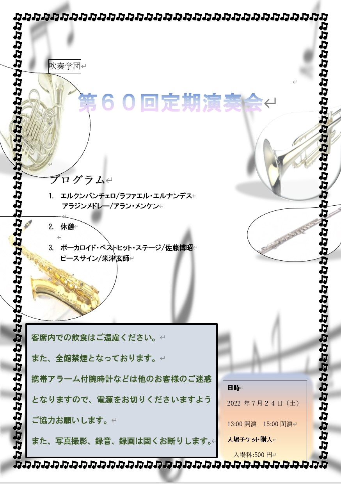
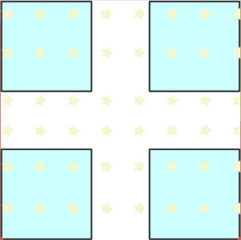
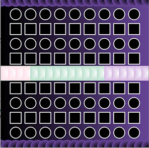
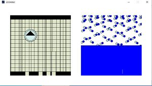
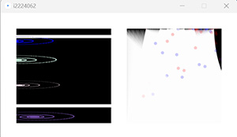
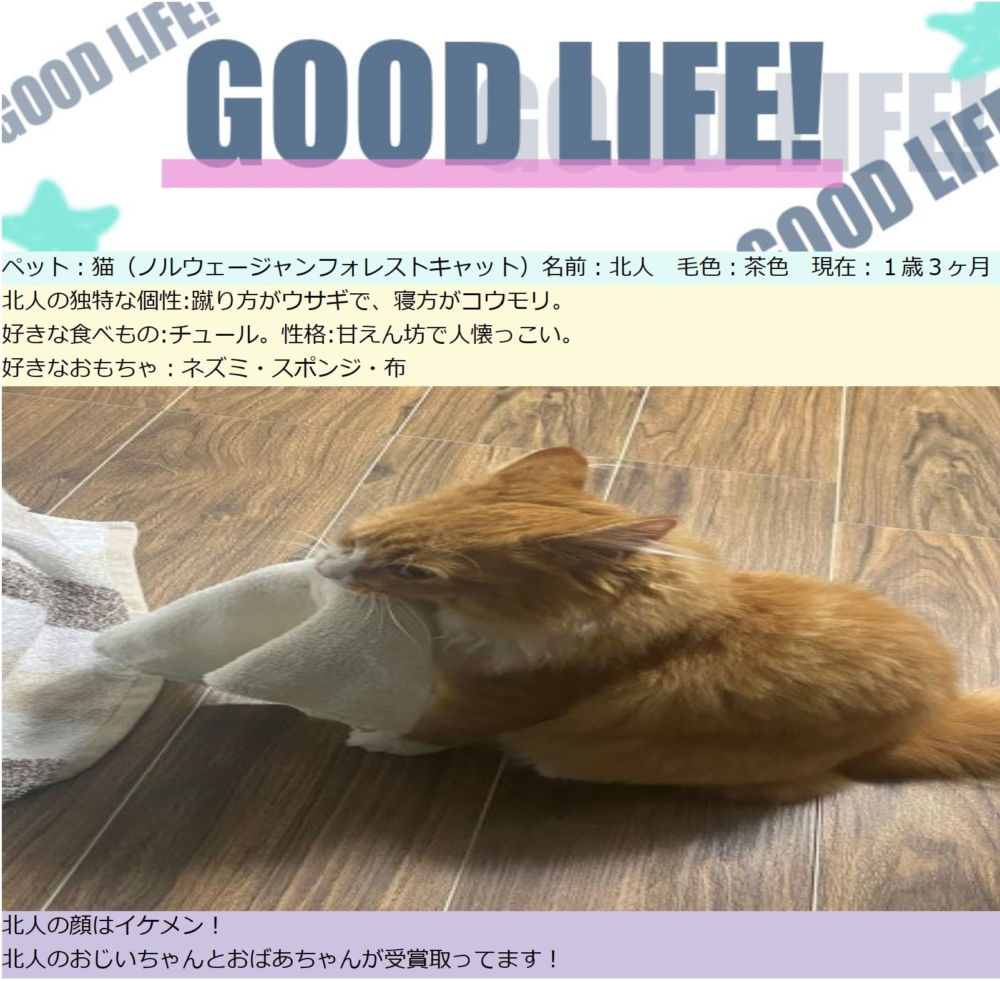
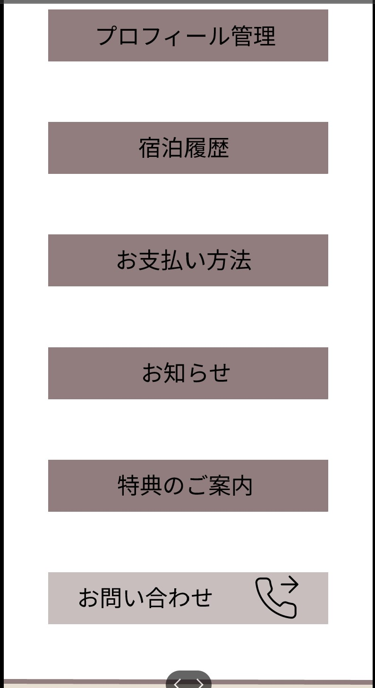

Work1
制作時期
情報処理演習(一年)
課題内容
チラシ課題
ポイント
楽器の部分
Work2
制作時期
メディアプログラミング演習(一年)
制作時期
メディアプログラミング演習(二年)

課題内容
ハンカチの柄
ポイント
星を配置しポップに見えるよう色を明るくし、十字路に見えるよう周りに四角を配置しました。

課題内容
グラデーションのある美しい画面
ポイント
上下の円と中心にある四角をグラデーションにしました。

課題内容
相反する2つの言葉をそれぞれイメージしてプログラムによってグラフィックを作成しなさい。
ポイント
下降では、雨をイメージして化学っぽくしました。

課題内容
ノイズを使った表現

課題内容
相反する2つの言葉をそれぞれイメージしてプログラムによってグラフィックを作成しなさい。
Work3
制作時期
IM基礎演習_映像(一年)
作品タイトル
気分転換
ポイント
どの角度から撮影し、カットするのかを考えました。
youtubeのリンク先
Work4
制作時期
Web演習(一年)
作品タイトル
「CAT」
課題内容
「自分自身をアピールできるウェブサイトを制作する」
ポイント
ロゴの部分：フォトショップでデザインしました。
制作時期
Web演習(二年)
ターゲット
高校生
課題内容
アプリ「figmaのプロトタイプ機能で遷移させ、操作感を確認しつつ、最終のデザイン調整をおこなう」
ポイント
メニュー部分
